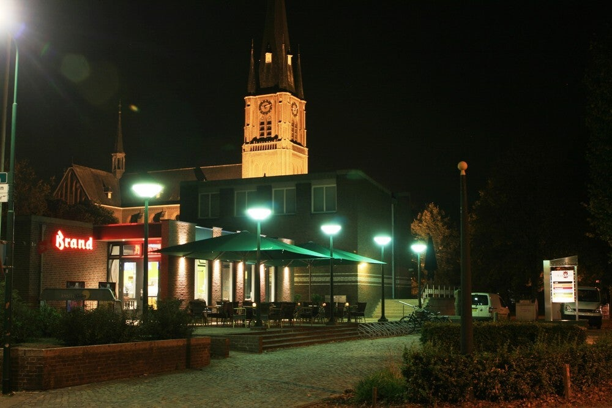
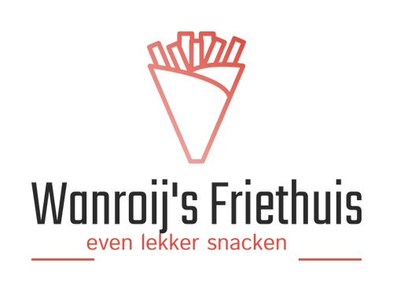
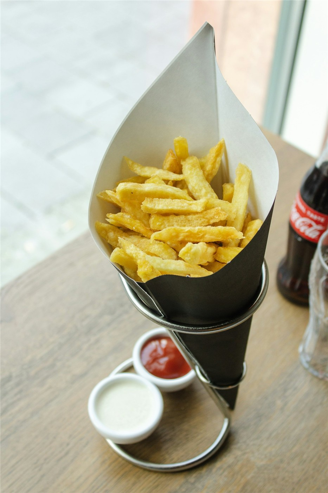

Restaurant in het oude raadhuis van Wanroij, sinds 2004
Waar vroeger vergaderd werd, wordt nu gegeten
Lunch, diner of een borrel, midden in het dorp en midden tussen de weilanden en bossen. Willem Cuppens en zijn team heten u van harte welkom.
Keuken open tot 20.30 uur · dinsdag rustdag
Welkom bij 't Raadhuis
Waar dorpse gezelligheid en culinair genieten samenkomen. Sinds 2004 zitten wij in het hart van Wanroij: een dorp waar ons kent ons nog heel gewoon is. We ontvangen iedereen met open armen en nemen graag de tijd voor persoonlijke aandacht.
Ons verhaal
Wie bij ons binnenstapt, proeft niet alleen de sfeer van ons restaurant, maar ook een stukje geschiedenis van Wanroij. Het pand stond vroeger bekend als het Raadhuis van Wanroij. Jarenlang werd hier vergaderd, besloten en geleefd voor het dorp.
Vandaag is dat verleden tijd. Geen ambtelijke stukken meer, maar warmte, gezelligheid, goed eten en mooie gesprekken. Precies zoals wij het graag zien.

Midden in het dorp, midden in de natuur
Een fijne plek om even op adem te komen tijdens een fiets- of wandeltocht. Na een rondje door de natuur bent u welkom voor een lekkere lunch, een goed diner of een gezellige borrel, maar ook gewoon als u zin hebt in lekker eten.
Met de seizoenen mee
Onze menukaarten veranderen met de seizoenen. Elk seizoen nieuwe gerechten, bereid met lokale producten die op dat moment op hun best zijn.
Persoonlijke aandacht
Persoonlijke aandacht en kwaliteit staan voorop. Iedereen moet zich welkom voelen en ongedwongen kunnen genieten in een warme, ontspannen setting.
Ervaringen van gasten
Benieuwd wat anderen van hun bezoek vonden? Lees de recensies op eet.nu.
Openingstijden
Wij ontvangen u graag, met warme service en heerlijke gerechten. De keuken sluit om 20.30 uur, maar u mag gerust nog een uurtje natafelen.
Openingstijden voor het najaar. Dinsdag is onze rustdag.
| Dag | 't Raadhuis | Friethuis |
|---|---|---|
| Maandag | vanaf 16.00 | 16.00 – 20.30 |
| Dinsdag | gesloten | gesloten |
| Woensdag | alleen Friethuis | 16.00 – 20.30 |
| Donderdag | vanaf 16.00 | 16.00 – 20.30 |
| Vrijdag | vanaf 12.00 | 12.00 – 20.30 |
| Zaterdag | vanaf 16.00 | 16.00 – 20.30 |
| Zondag | vanaf 12.00 | 12.00 – 20.30 |


Reserveer uw tafel
Klaar voor een sfeervolle avond met heerlijk eten? Laat ons weten wanneer u wilt komen en met hoeveel personen, dan bereiden we alles voor u voor.
Geef bij uw reservering ook de gewenste tijd door, en eventuele allergieën of speciale wensen. Zo kunnen wij er rekening mee houden en wordt u met een warm hart ontvangen.

Feesten en partijen
30 tot 120 gasten
Tijd voor een feestje of een diner met vrienden en familie? Of je nu kiest voor een uitgebreid diner, een borrel met muziek of een gezellig dansje: wij zorgen voor een persoonlijke en hartelijke ervaring die precies bij jullie past.
Van het samenstellen van het menu tot de aankleding van de zaal, de muziek en de sfeer: met jarenlange ervaring luisteren we naar jullie wensen en denken we mee, zodat iedereen zonder zorgen kan genieten.
Staat er iets leuks op de agenda? Bel of mail ons, of kom gezellig langs.

Wanroij's Friethuis
Lekker eten zonder poespas. Goudbruine frietjes, smaakvolle snacks en royale schotels, altijd vers en precies zoals je het wilt. Kom binnen, kies je favoriet en geniet ervan, of bestel en haal het op.

Open
Ma, wo, do, za 16.00 – 20.30
Vr en zo 12.00 – 20.30
Dinsdag gesloten
Op woensdag is alleen het Friethuis open.
Contact en route
't Raadhuis WanroijDorpsstraat 10
5446 AN Wanroij